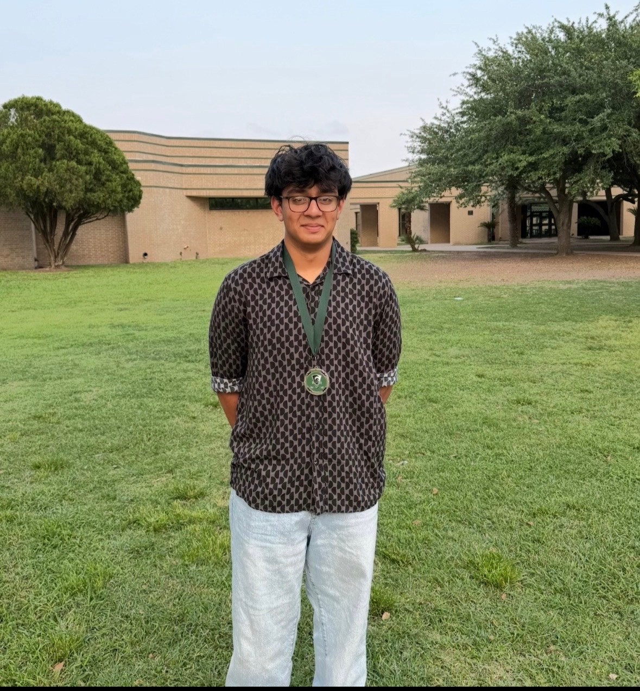

WELCOME TO MY PORTFOLIO
Hello, I'm Kris Kumar
High School Student | Future Civil Engineer
Hello! My name is Kris Kumar, and I'm a junior at South Texas ISD Science Academy. In my free time, I like playing video games and taking care of my garden. I am also interested in engineering because I like learning how things work. After high school, I want to attend Texas A&M University and study Civil Engineering. I also want to learn more about manufacturing. One of my goals is to get more experience through internships and projects so I can learn new skills and prepare for my future job.
Learn More About Me
Three Words That Describe Me
Curious
I enjoy asking questions and learning how things work.
Studious
I work to improve my knowledge and develop new skills.
Stewardship
I value taking responsibility and helping my community.
My Interests and Goals
Engineering
I am interested in Civil Engineering and learning how structures and systems are designed.
Manufacturing
I enjoy learning about 3D printing, robotics, and hands-on engineering projects.
Future Goals
I plan to attend Texas A&M University and continue building my experience through projects and internships.